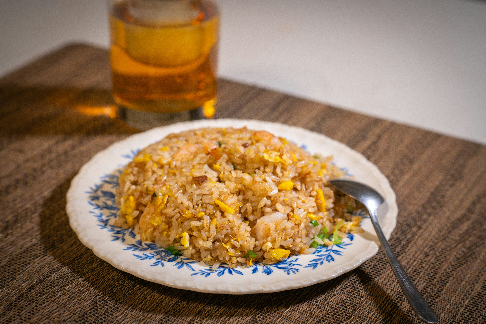

Craving delicious fried rice but your local take-out restaurants are closed? Fear not! Fried rice can easily be made at home in a pinch! All you need is some rice, some soy sauce, and some egg, and bam! You have a simple fried rice! Or, you can elavate it a bit more by adding in some frozen or fresh veggies to the mix, and if you're feeling extra fancy, you can throw in some shrimp! Or a meat of your choice! Fried rice is so versatile and tastes great with so many things, so feel free to expand or adjust this recipe as you see fit!
Prepare your rice if needed. Thinly slice your green onions, keeping white and green portions seperate. Crack two eggs into a bowl, using a utensil beat them until whites and yolks are completely mixed. Set ingredients aside.
Set a large pan on the stove at medium-high heat. Add 2 tablespoons of your preferred cooking oil. Once the pan is hot, add your choice of veggies, if any, and add the white portion of green onions to the pan. Cover and cook until veggies are tender, stirring occasionally.
Once veggies are tender, add in your eggs. Keep stirring them until the eggs reach a scrambled consistency your happy with.
Add in your rice, 1/4 teaspoon of salt, and a pinch of pepper. Now is also when you would add any cooked meats or fish to the dish. Then, add in 1 tablespoon of soysauce, mixing until everything is coated.
Once the dish is heated through it's ready to serve! You can garnish the rice with the green portion of green onions.